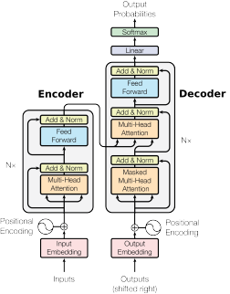
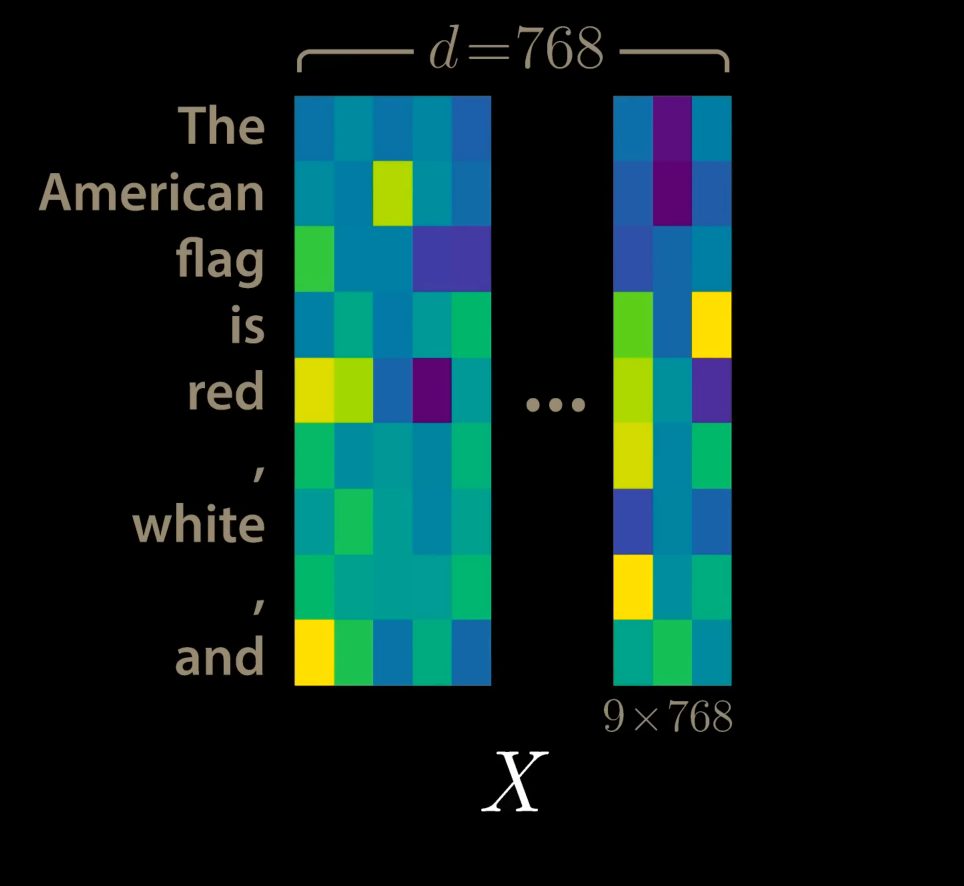
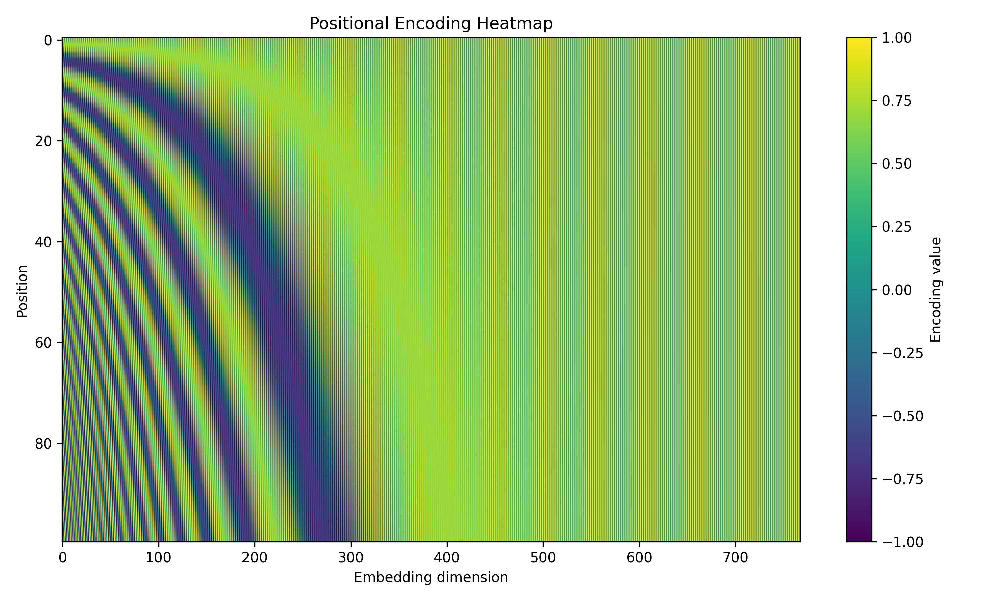
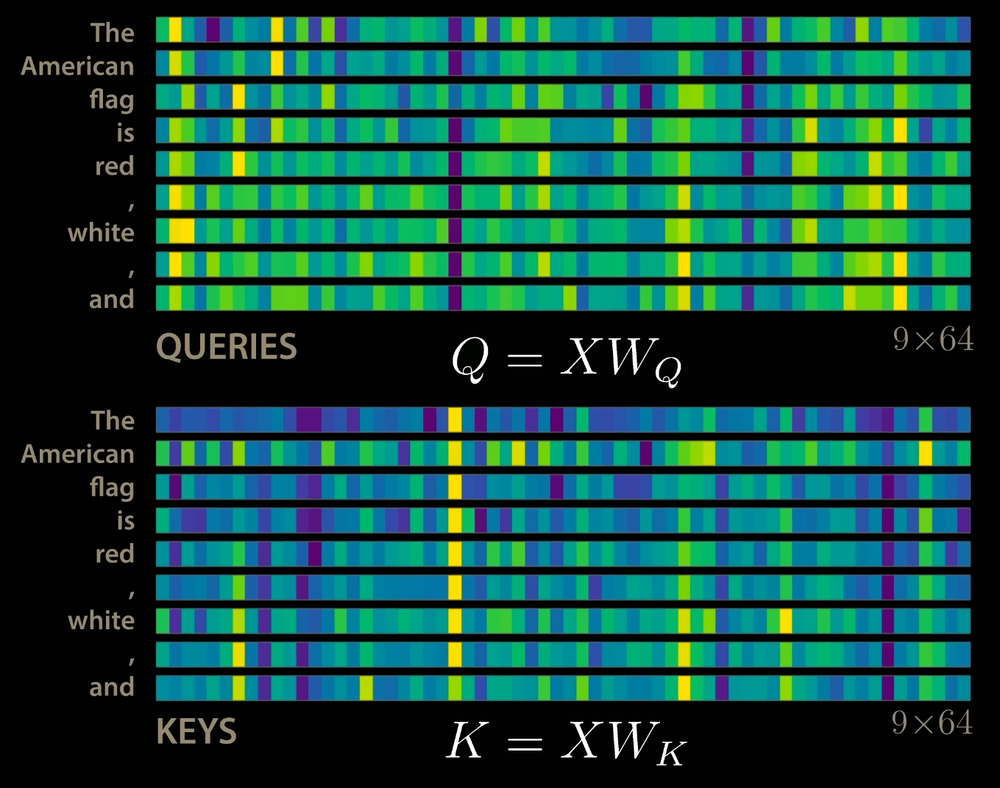
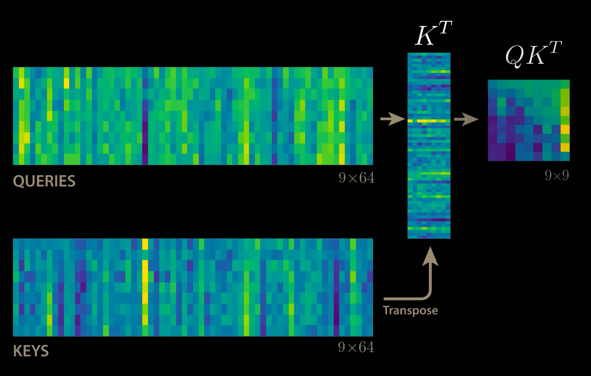
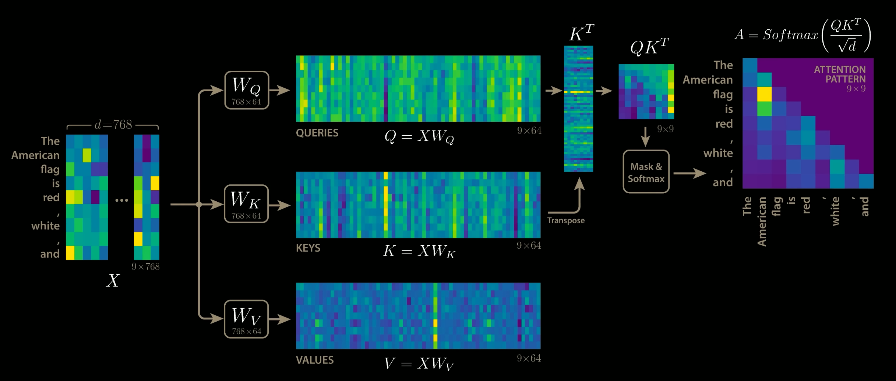
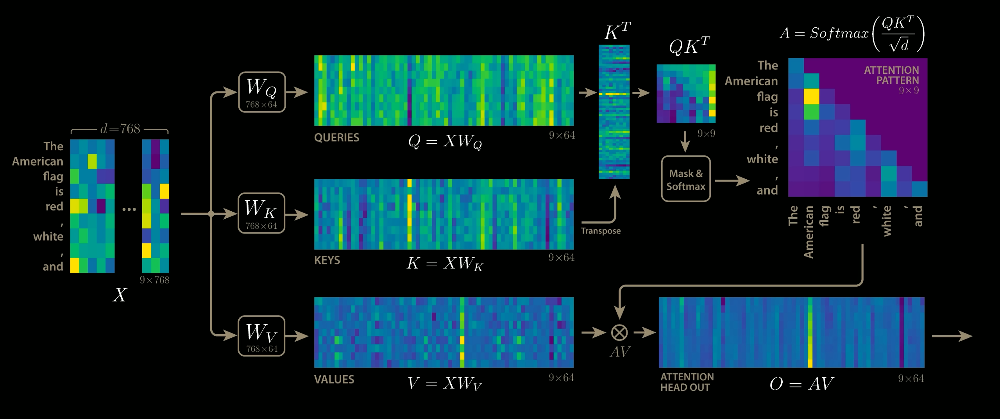
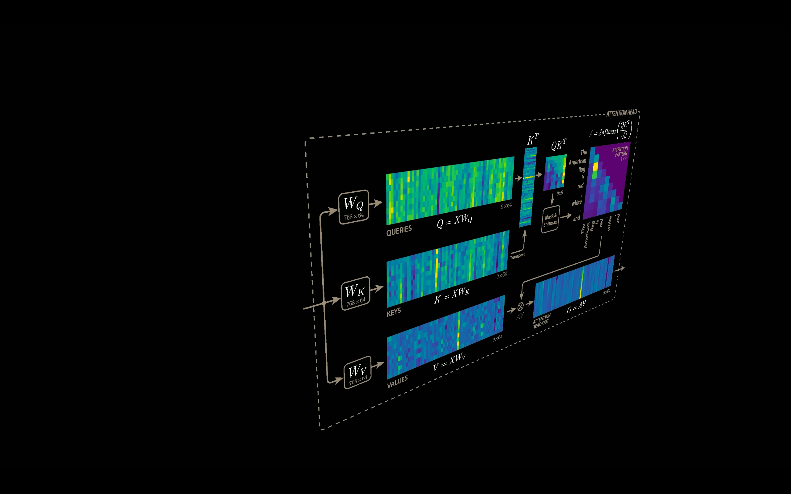
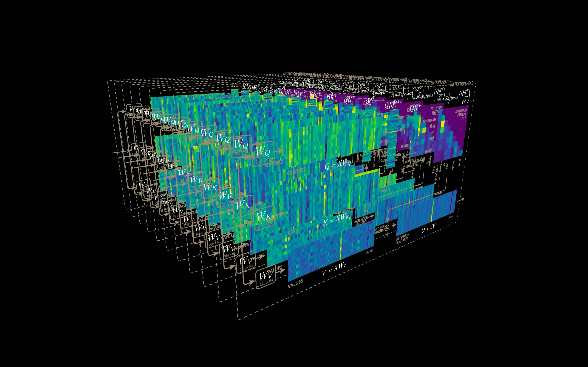
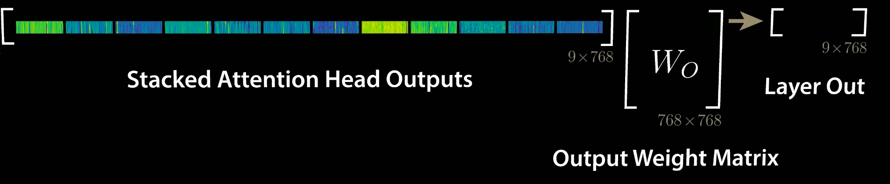

Transformer Model
It uses encoder-decoder structure where both encoder block and decoder block have an attention mechanism.

Transformer ArchitecturePositional Encoding
If $d_{model}$ is our embedding dimension, and $T$ is the sequence length, the input can be represented as
$$X\in\mathbb{R}^{T \times d_{model}}$$As an example, we have $d_{model}=768$ and a sequence length $T=9$, for the following:

Input embeddings showing 9 tokens each with 768-dimensional vectorsSince the model contains not recurrence and no convolution, in order for model to make use of the sequence, we must inject some information about the relative or absolute position of tolens in the sequence. To this end, we add “positional encodings” to the input embeddings element wise as:
$$X = X + PE, \quad X, PE \in \mathbb{R}^{T\times d_{model}}$$The positional encodings have the same dimension $d_model$ as the embeddings, so that the two can be summed. There are many choices but the original paper uses the following:
$$ PE(pos, 2i) = sin(pos/ 10000^{2i/d_{model}}) $$$$ PE(pos, 2i + 1) = cos(pos/ 10000^{2i/d_{model}}) $$
where $pos$ is the position and $i$ is the dimension.
class PositionalEncoding(nn.Module):
def __init__(self, L, d_model):
super().__init__()
pe = torch.zeros(L, d_model, dtype=torch.float32)
position = torch.arange(L, dtype=torch.float32).unsqueeze(1)
div_term = 10_000 ** (torch.arange(0, d_model, 2, dtype=torch.float32) / d_model)
pe[:, 0::2] = torch.sin(position / div_term)
pe[:, 1::2] = torch.cos(position / div_term)
self.register_buffer('pe', pe)
def forward(self, x):
return x + self.pe[:x.size(1)].unsqueeze(0)
# Parameters
L = 100 # sequence length
d_model = 768 # embedding dimension
# Create positional encoding
pe = PositionalEncoding(L, d_model)
# Extract the matrix (L x d_model)
pos_encoding = pe.pe.numpy()
plt.figure(figsize=(10, 6))
plt.imshow(pos_encoding, aspect='auto', cmap='viridis')
plt.colorbar(label="Encoding value")
plt.xlabel("Embedding dimension")
plt.ylabel("Position")
plt.title("Positional Encoding Heatmap")
plt.tight_layout()
plt.show()

Positional Encoding visualization for d_model=768 and T = 100Attention
The attention mechanism describes how “important” some features are and how much we want to “attend” to them. The kind of attention we use here describes a weighted average of (sequence) elements with the weights dynamically computed based on an input query and element’s keys.
-
Query: The query is a feature vector describing what we are looking for in the sequence, i.e., what we would we maybe pay attention to.
-
Keys: For each input element, we have a key which is again a feature vector. This feature vector roughly describes what the element is “offering”, or when it might be important. The keys should be designed such that we can identify the elements we want to pay attention to based on query.
-
Values: For each input element, we also have a value vector. This feature vector is the one we want to average over.
-
Score Function: To rate which elements we want to pay attention to, we need to specify a score function $f_{attn}$. The score function takes the query and a key as input and outputs the score/attention weight of the query-key pair. It is usually implemented by simple similarity metrics like a dot product, or a small MLP.
The weights of the average are calculated by a softmax over all score function outputs. Hence, we assign those value vectors a higher weight whose corresponding key is most similar to the query. If we try to describe it with pseudo-math, we can write:
$$ \alpha_i = \frac{\exp(f_{attn}(key_i, query))}{\sum_j \exp(f_{attn}(key_j, query))}, \quad out=\sum_i\alpha_i\cdot value_i $$What queries to use, how the key and value vectors are defined and what score function is used is a design choice in most attention mechanisms. The attention applied inside the transformer architecture is called self-attention.

Query, key projections showing dimensions through attention computation
Scaled Dot Product Attention
The core concept behind self-attention is the scaled dot product attention. Our goal is to have an attention mechanism with which any element in a sequence can attend to any other while being efficient to compute.
The dot product attention takes as input the following:
- $Q \in \mathbb{R}^{T\times d_k}$ a set of queries
- $K \in \mathbb{R}^{T\times d_k}$ a set of keys
- $V\in \mathbb{R}^{T\times d_k}$ a set of values
where $T$ is the sequence length, and $d_k$ and $d_v$ are the hidden dimensionality for queries/keys and values respectively. (In the paper, $d_v = d_k = \frac{d_{model}}{h}$).
For simplicity, we’ll neglect the batch dimension. The attention value from element $i$ to $j$ is based on its similarity of the query $Q_i$ and the key $K_j$, using the dot product as a similarity metric. In math, we calculate the dot product attention as follows:
$$ \displaystyle \underbrace{ \begin{bmatrix} -\, q_1 \,-\\ -\, q_2 \,-\\ \vdots\\ -\, q_n \,- \end{bmatrix} }_{Q} \; \underbrace{ \begin{bmatrix} | & | & & |\\ k_1 & k_2 & \cdots & k_m\\ | & | & & | \end{bmatrix}^{\!T} }_{K^{\top}} \;=\; \underbrace{ \begin{bmatrix} q_1^{\top}k_1 & q_1^{\top}k_2 & \cdots & q_1^{\top}k_m\\ q_2^{\top}k_1 & q_2^{\top}k_2 & \cdots & q_2^{\top}k_m\\ \vdots & \vdots & \ddots & \vdots\\ q_n^{\top}k_1 & q_n^{\top}k_2 & \cdots & q_n^{\top}k_m \end{bmatrix} }_{QK^{\top}} $$

Attention score matrix visualization showing query-key dot products with heatmapThe matrix multiplication $QK^{\top}$ performs the dot product for every possible pair of queries and keys, resulting in a matrix of shape $T\times T$. Each row represents the attention logits for a specific element $i$ to all other elements in the sequence. On these we apply the softmax and multiply with value vector to obtain a weighted mean (weights determined by the attention).
$$ \text{Attention}(Q, K, V) = \mathrm{softmax}\left(\frac{Q K^{\top}}{\sqrt{d_k}}\right) V $$

Scaled dot-product attention computation flow with softmax and value multiplicationThe scaling factor $1/\sqrt{d_k}$ is crucial to maintain an appropriate variance of attention values after initialization. We initialize our layers with intention of having equal variance throughout the model, and hence, $Q$ and $K$ might also have a variance close to $1$. However, performing a dot product over two vectors with variance $\sigma^2$ results in a scalar having $d_k$ times higher variance:
$$ q_i\sim\mathcal{N}(0, \sigma^2), k_i\sim\mathcal{N}(0, \sigma^2) \rightarrow \text{Var}\left(\sum_{i=1}^{d_k}q_i\cdot k_i\right) = \sigma^4\cdot d_k $$If we do not scale down variance back to $\sim\sigma^2$, the softmax over the logits will already saturate to $1$ for one random element and $0$ for all others. The gradients through the softmax will be close to zero so that we can’t learn the parameters appropriately. Note that the extra factor of $\sigma^2$, i.e., having $\sigma^4$ instead of $\sigma^2$, is usually not an issue, since we keep the original variance $\sigma^2$ close to $1$ anyways.

Attention Head Output
 Acaled Dot Product Attention Computation Graph
Acaled Dot Product Attention Computation Graph
class SelfAttentionBlock(nn.Module):
def __init__(self, d_model, d_k):
super().__init__()
self.d_k = d_k
self.Wq = nn.Linear(d_model, d_k)
self.Wk = nn.Linear(d_model, d_k)
self.Wv = nn.Linear(d_model, d_k)
self.scores = None
self.attention = None
def forward(self, x):
Q = self.Wq(x) # (B, L, d_k)
K = self.Wk(x) # (B, L, d_k)
V = self.Wv(x) # (B, L, d_k)
self.scores = torch.matmul(Q, K.transpose(-2, -1)) / (self.d_k ** 0.5) # (B, L, L)
self.attention = torch.softmax(self.scores, dim=-1)
return torch.matmul(self.attention, V) # (B, L, d_k)
Multi Head Attention
The scaled dot product attention allows a network to attend over a sequence. However, often there are multiple different aspects a sequence element wants to attend to, and a single weighted average is not a good option for it. So, we extend the attention mechanism to multiple heads, i.e., multiple query-key-value triples on the same features.
Specifically, given a query, key, and value matrix, we transform $h$ subqueries, sub-keys, and sub-values, which we pass through the scaled dot product attention independently. Afterward, we concatenate the heads, combine them with a final weight matrix. Mathematically, this can be expressed as:
$$ \text{Multihead}(Q, K, V) = \text{Concat}(\text{head}_1, \dots, \text{head}_h) W^{O} $$$$ \text{where } \text{head}_i = \text{Attention}(QW^{Q}_i , KW^{K}_i, VW^{V}_i) $$We refer to this as Multi-Head Attention layer with the learnable parameters:
- $W^{Q}_{1\dots h}\in \mathbb{R}^{D \times d_k}$
- $W^{K}_{1\dots h}\in \mathbb{R}^{D \times d_k}$
- $W^{V}_{1\dots h}\in \mathbb{R}^{D \times d_k}$
|
 Single attention head — queries, keys, values projections |
 Multi-head attention — parallel heads and concatenation |
One more thing to note, since we have used $d_k = d_v = d_{model}/h$, the reduced dimension of each head reduces the total computational cost and makes it simila to that of single-head attention with full dimensionality. Also, if for $h$ heads if we concatenate the output of dimension $T \times hd_v$, we get the $T\times d_{model}$ again.

Final transformer layer output with layer normalization and feed-forward network
 Multi Head Attention Computation Graph
Multi Head Attention Computation Graph
class MultiHeadAttention(nn.Module):
def __init__(self, d_model, d_k, d_v, num_heads):
super().__init__()
self.num_heads = num_heads
self.heads = nn.ModuleList([SelfAttentionBlock(d_model, d_k) for _ in range(num_heads)])
self.Wo = nn.Linear(num_heads*d_v, d_model)
def forward(self, x):
# x: (B, L, d_model)
head_outputs = [head(x) for head in self.heads] # list of (B, L, d_v)
Z = torch.cat(head_outputs, dim=-1) # (B, L, num_heads*d_v)
O = self.Wo(Z) # (B, L, d_model)
return O # residual
In a Neural Network
When implementing a Multi-Head Attention layer in a neural network, where we don’t have an arbitrary query, key, and value vector as input, a simple but effective implementation is to set the current feature map in a NN, $X\in \mathbb{R}^{B\times T\times{d_{model}}}$ (B being the batch size, T the sequence length, $d_{model}$ the hidden dimensionality of $X$), as $Q, K$ and $V$. The consecutive weight matrices $W^Q$, $W^K$, and $W^V$ can transform $X$ to the corresponding feature vectors that represent the queries, keys, and values of the input.
class FeedForwardLayer(nn.Module):
def __init__(self, d_ff, d_model):
super().__init__()
self.model = nn.Sequential(*[
nn.Linear(d_model, d_ff),
nn.GELU(),
nn.Linear(d_ff, d_model),
])
def forward(self, x):
x = self.model(x)
return x
Encoder Block
TODO
The complete Encoder Block can be implemeneted as the following:
class Encoder(nn.Module):
def __init__(self, V, L, d_model, d_ff=2048, num_heads=8):
super().__init__()
d_v = d_k = d_model // num_heads
self.embedding = Embedding(V, d_model)
self.positional_encoding = PositionalEncoding(L, d_model)
self.self_attention = MultiHeadAttention(d_model, d_k, d_v, num_heads)
self.feed_forward = FeedForwardLayer(d_ff, d_model)
self.attn_norm = nn.LayerNorm(d_model)
self.ff_norm = nn.LayerNorm(d_model)
self.dropout = nn.Dropout(0.1)
def forward(self, x):
x = self.embedding(x)
x = self.positional_encoding(x)
x = self.attn_norm(x + self.dropout(self.self_attention(x)))
x = self.ff_norm(x + self.dropout(self.feed_forward(x)))
return x